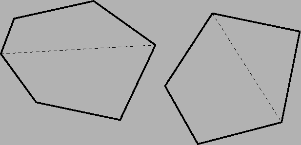

Beschrijving
Zoals bekend is Convexië een eilandengroep in de Verre Oceaan. De eilanden hebben een kenmerkende vorm: de kust bestaat uit aaneengesloten rechte lijnen. Bovendien is elk eiland convex; dat wil zeggen dat je van elk hoekpunt in een rechte lijn naar een willekeurig ander hoekpunt kan lopen, zonder dat je water hoeft over te steken. Convexië is zeer dun bevolkt; op de meeste eilanden woont slechts één persoon. In verband met de bevolkingsgroei moet daar nu verandering in komen.
De koning heeft besloten dat op elk eiland best twee mensen kunnen wonen.
Omdat convexianen hun privacy erg belangrijk vinden, moet er op elk eiland
een duidelijke grens komen tussen de gebieden van de bewoners.
Om het eenvoudig te maken wil de koning op elk eiland de grens vaststellen
als een rechte lijn tussen twee van de hoekpunten van het eiland.
Natuurlijk is het ook belangrijk dat beide bewoners ongeveer evenveel ruimte
krijgen.

Probleem
De koning staat er op dat elk eiland verdeeld wordt door het trekken van een rechte lijn tussen twee van de hoekpunten. Onder deze voorwaarde blijkt het helaas niet altijd mogelijk te zijn om de twee gebieden exact even groot te maken.
Schrijf een programma dat, gegeven een beschrijving van de vorm van een
eiland, bepaalt wat het kleinst mogelijke verschil in oppervlakte is wanneer
het eiland op bovenstaande wijze in twee gebieden wordt verdeeld.
Invoer (lezen uit: convex.in)
Op de eerste regel staat het aantal eilanden dat gesplitst moet worden. Dan volgt per eiland:
Uitvoer (schrijven naar standard-output)
Voor elk eiland geef je een regel met daarop het minimale verschil in
oppervlakte in vierkante meters ().
Geef alle antwoorden met precies één cijfer achter de decimale punt!
Voorbeeld
Invoer
2
4
0 0
2 0
2 3
1 3
5
10 1
12 1
12 4
10 3
9 2
Uitvoer
1.5
0.0